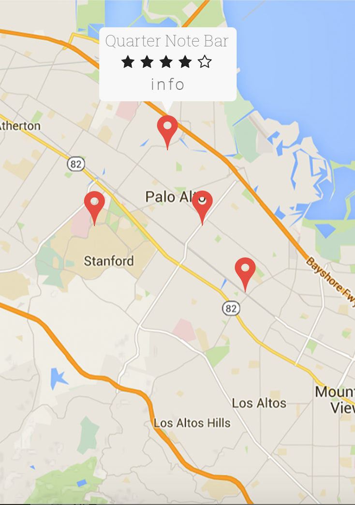

<ion-view view-title="Venues">
  <ion-content class="venues">

    <div class="bar bar-header item-input-inset">
      <label class="item-input-wrapper">
        <i class="icon ion-ios-search placeholder-icon"></i>
        <input type="search" placeholder="Search">
      </label>
      <button class="button button-clear">
        Cancel
      </button>
    </div>  

    

  </ion-content>
</ion-view>
